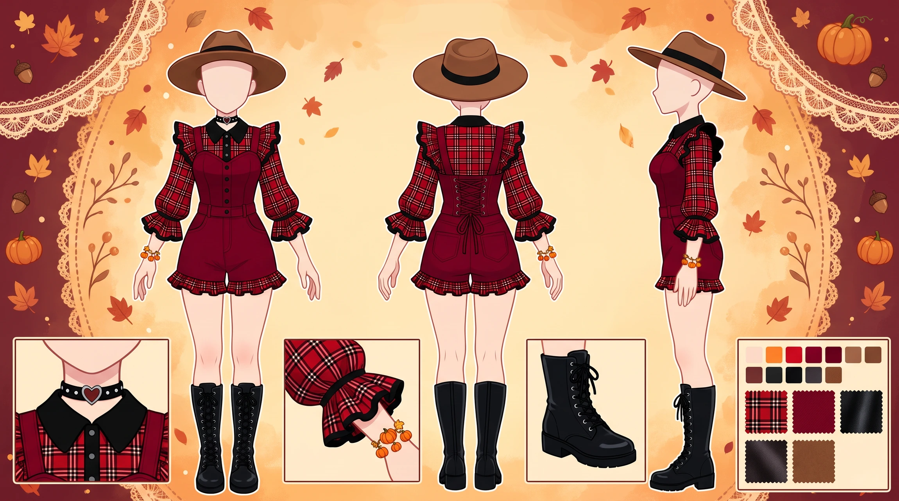
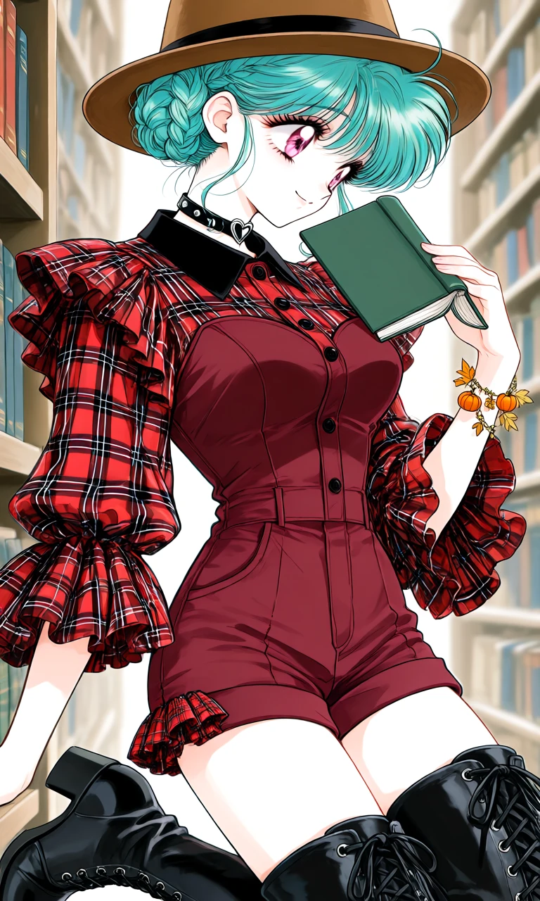
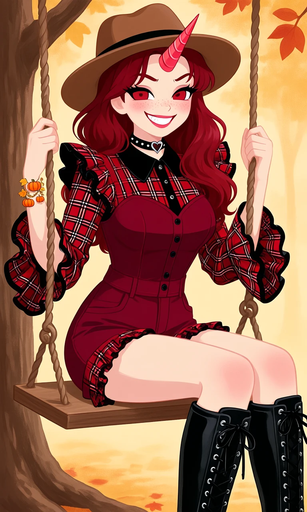

Sweet & Spiced: Cranberry Bonfire

Outfit Prompt
A charming, feminine autumn-inspired outfit featuring a fitted deep crimson-red one-piece short jumpsuit worn over a separate red, black, and white plaid blouse.
The deep crimson-red short jumpsuit is a single continuous piece of clothing, combining a fitted sleeveless upper body with very short tailored shorts. The rich crimson fabric follows the natural curves of the bust, narrows gently at the waist, and flows smoothly over the hips into the short pant legs. The upper and lower sections are seamlessly connected, creating a smooth, uninterrupted silhouette.
The upper section features a gently curved sweetheart neckline and a vertical row of small round black buttons running down the center front. Subtle vertical stitching provides a flattering fitted shape. The waist is naturally fitted, with the crimson fabric continuing smoothly into the shorts without any overlapping panels, decorative waist flaps, or separate shirt hem.
The lower section features very short crimson-red shorts ending at the upper thighs, with softly rounded hips, subtle side pockets, and wide neatly rolled cuffs. Small red-and-black plaid ruffles peek out beneath the shorts, creating a playful decorative trim.
Underneath the jumpsuit is a separate fitted red, black, and white plaid blouse with a structured black pointed collar and small matching black buttons at the neckline. The blouse features softly puffed shoulders and dramatic three-quarter-length sleeves ending in layered, flared bell-shaped ruffles. Deep black fabric lines the inner ruffles, contrasting with the rich red-and-black plaid outer layers.
A wide-brimmed warm brown felt hat features a rounded crown, gently curved brim, and a simple black ribbon hatband.
A black leather choker features small polished silver studs and a central silver heart-shaped ornament.
A delicate gold charm bracelet features miniature orange pumpkins, golden autumn leaves, and tiny dangling seasonal ornaments.
Tall black lace-up boots extend to just below the knees, featuring rounded toes, sturdy soles, low block heels, and long rows of black crisscross laces threaded through small metallic eyelets.
The complete outfit combines a smoothly fitted deep crimson-red one-piece short jumpsuit, dramatic red-and-black plaid sleeves, very short rolled shorts, a classic brown hat, and tall black lace-up boots. The jumpsuit maintains a continuous, tailored silhouette from the sweetheart neckline to the shorts, with a naturally defined waist and no separate upper garment.
Outfit Examples



